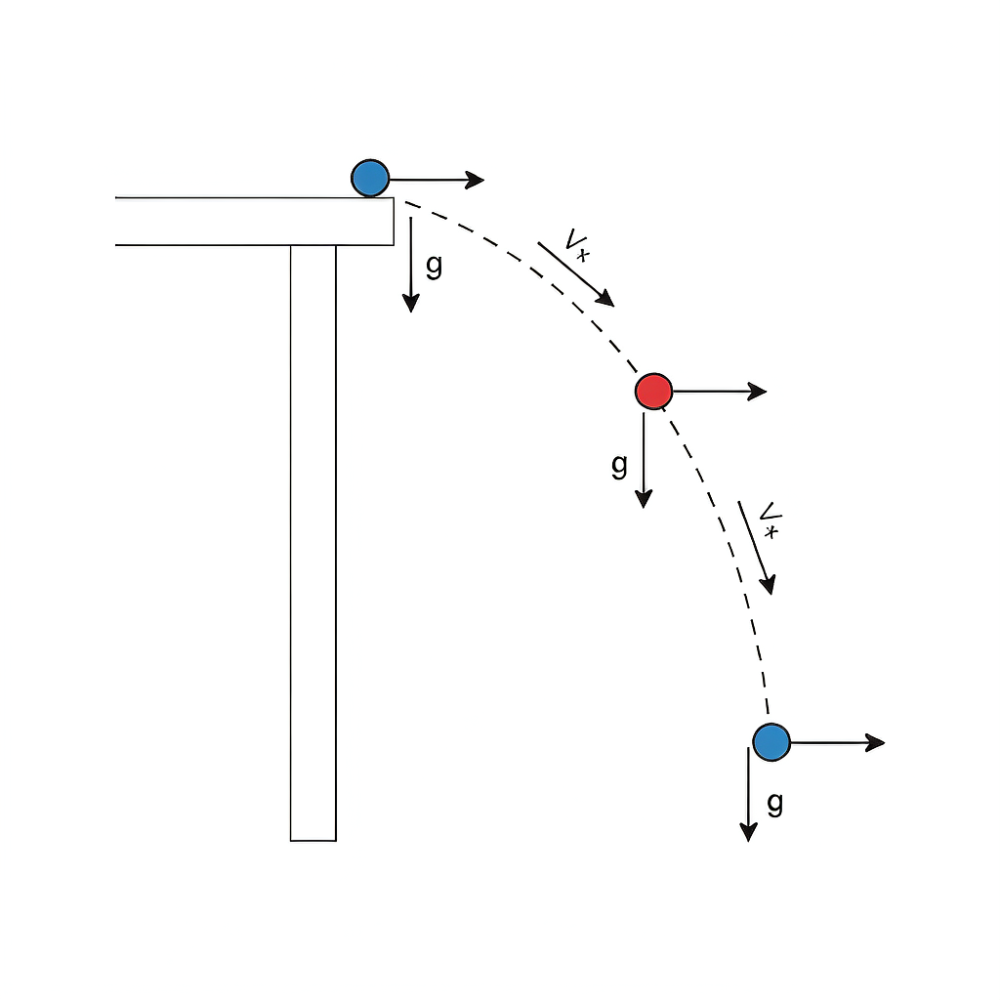
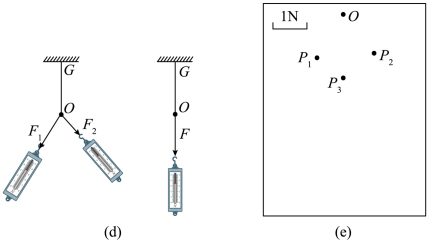

验证力的平行四边形定则
力的合成

验证力的平行四边形定则实验装置
实验原理
核心原理：互成角度的两个力 F₁、F₂ 的合力 F，与以 F₁、F₂ 为邻边作平行四边形的对角线大小、方向一致。
做法：用橡皮条结点拉到某 O 点，记下 F₁、F₂ 的大小方向；再用一个力 F 单独把结点拉到同一 O 点，比较 F 与 F₁、F₂ 的合成结果。
关键：两次都把结点拉到同一位置，才能保证作用效果相同（等效替代）。
做法：用橡皮条结点拉到某 O 点，记下 F₁、F₂ 的大小方向；再用一个力 F 单独把结点拉到同一 O 点，比较 F 与 F₁、F₂ 的合成结果。
关键：两次都把结点拉到同一位置，才能保证作用效果相同（等效替代）。
闯关练习

图 3-2：（d）两力 F₁、F₂ 拉橡皮条结点至 O 点的装置；（e）记录纸：O 为结点位置，P₁、P₂、P₃ 为多次拉伸的标记点（标度 1N）
高考真题
（2021·湖南）在验证平行四边形定则实验中，先用互成角度的 F₁、F₂ 将橡皮条结点拉至 O 点；再用一个弹簧测力计将结点拉至同一 O 点，读数为 F。则 F 与 F₁、F₂ 的关系是？
答案：F 应是以 F₁、F₂ 为邻边的平行四边形的对角线（大小、方向均相符），即 F 是 F₁、F₂ 的合力。
（问答题·误差分析）在做『验证力的平行四边形定则』实验中，根据记录纸上 F₁、F₂ 的方向大小，按平行四边形定则作图得到合力 F；同时用一只弹簧测力计把结点拉到同一 O 点，测得 F′。请写出可能产生误差的两点原因。
答案：① 没有做到弹簧秤、细绳、橡皮条都与木板平行（导致力的方向偏离纸面，作图失真）；② 读数时没有正视弹簧测力计（产生视差，读数偏大或偏小）。其他可能：作图误差（线段/角度不精确）、未把结点拉到同一位置 O 等。